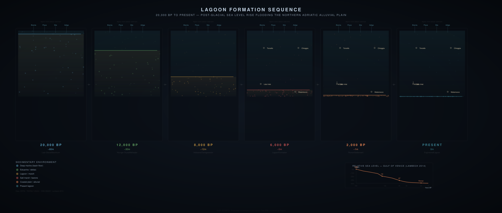
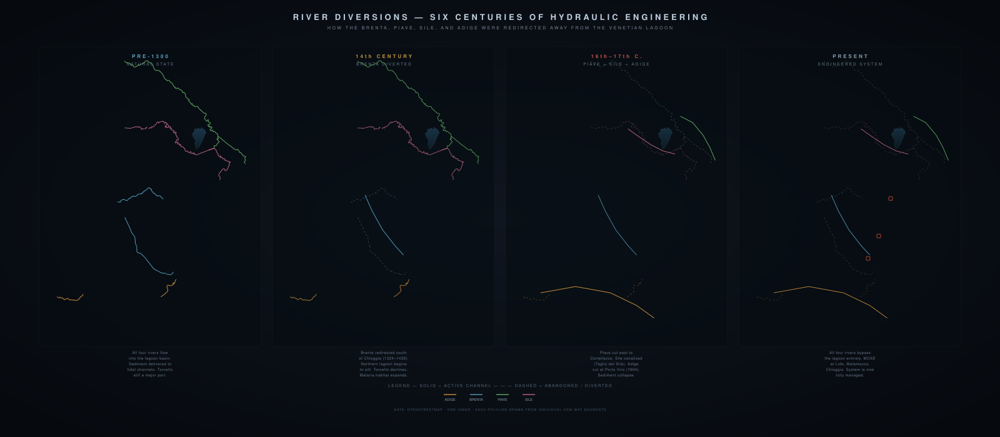
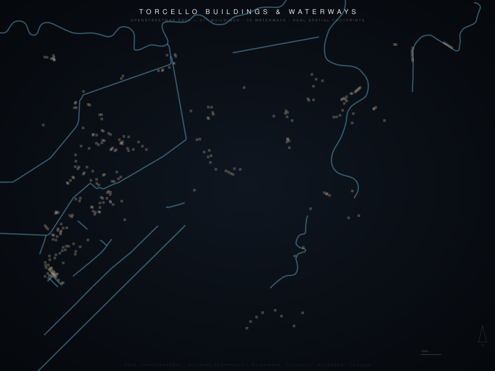
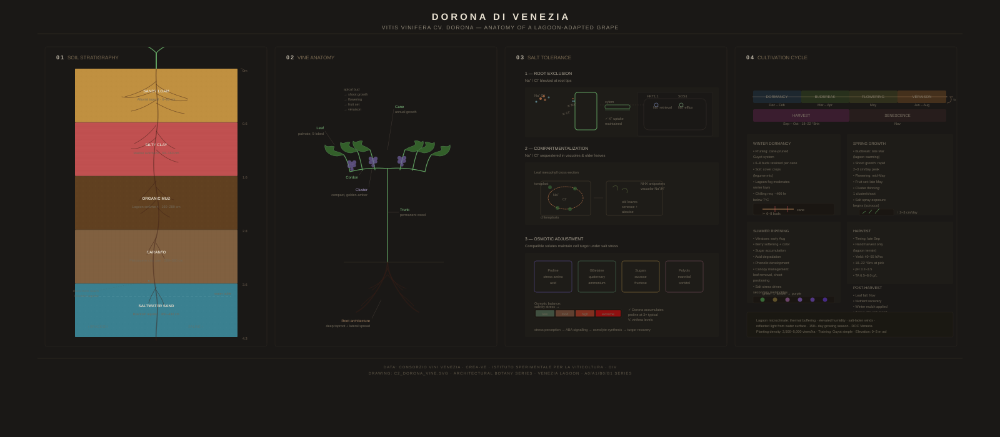
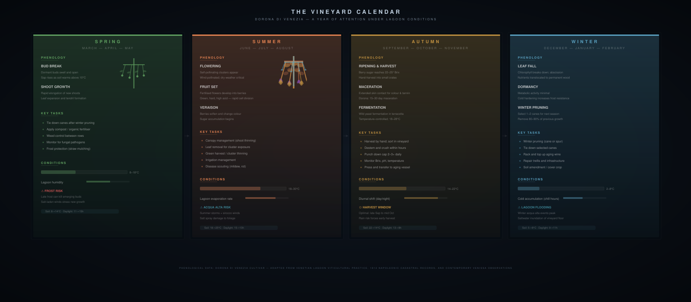
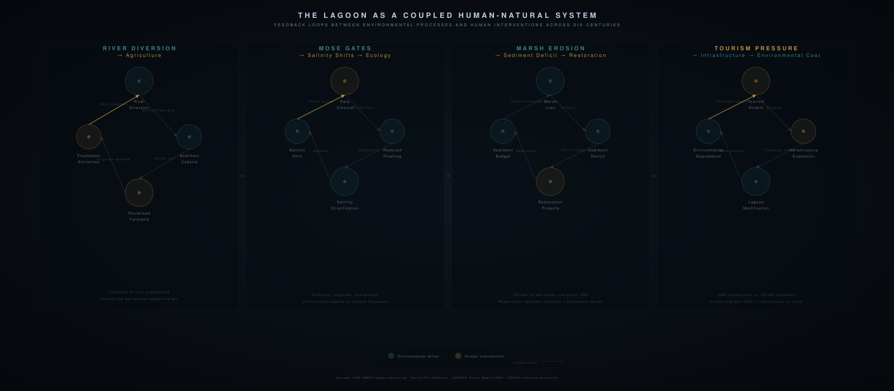
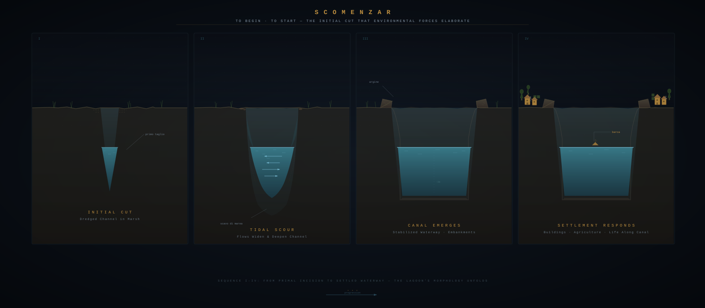

For six thousand years, this lagoon has been shaped by human hands. Every island is constructed. Every channel has been dredged. Every marsh has been managed. To know the lagoon is to read the accumulated intelligence of generations — and to ask what comes next.
Chapter 1
The Lagoon Emerges
Six thousand years ago, rising seas after the last glacial maximum flooded the alluvial plain between the Alps and the Adriatic. The Brenta, Piave, Sile, Adige, and Tagliamento rivers deposited sediment into this shallow basin for millennia. The lagoon is not a natural formation in any simple sense: its current shape is entirely the product of human intervention.
Between the 14th and 18th centuries, Venice systematically diverted every major river away from the lagoon — the Brenta in the 1300s, the Piave in the 1600s, the Sile in the 1700s. The Republic understood something that many contemporary coastal managers do not: sediment is a design material. By controlling what entered the lagoon and where, Venice maintained its navigable channels, protected its salt marshes, and preserved the hydraulic conditions that made the city possible.
The lagoon's first great city — Torcello — began to silt. The engineering that preserved Venice as a maritime power contributed directly to Torcello's slow death. This is the pattern that repeats across the lagoon's history: every act of control produces new conditions that demand new forms of design.

Fig. 1 — Lagoon formation sequence: from alluvial plain to engineered lagoon

Fig. 2 — Six centuries of river diversions: Brenta, Piave, Sile, Adige
Freshwater from four rivers on the western margin, marine water through three inlets on the east. Between them: a continuous gradient that defines what can grow where. Rice and freshwater fish near the rivers. Dorona vines and artichokes in the brackish middle. Valli da pesca and shellfish toward the sea. The lagoon is not one place. It is thirty microclimates.
The Roman municipium of Altinum sat at the lagoon's edge, canal-connected to the Adriatic. In 639 AD, fleeing Lombard invasions on the mainland, the bishopric transferred to Torcello. The Cathedral of Santa Maria Assunta was founded. Over the next four centuries, Torcello grew into a major trading hub — Byzantine, Arab, and Frankish coins found in archaeological deposits, mosaic glass imported from Mediterranean workshops.
At its peak between the 10th and 13th centuries, Torcello's population reached 10,000 to 20,000. Ninety-six churches dotted the island and its surrounds. But the very river diversions that protected Venice from siltation starved Torcello of the freshwater and sediment that maintained its canals. By the 15th century, malaria, depopulation, and the shifting of trade routes to Venice proper had hollowed the island out. The cathedral remained, but the city around it dissolved.
1st c. BCRoman Altinum — major municipium at the lagoon edge, canal-connected
639 ADBishop's seat transferred to Torcello — Cathedral of Santa Maria Assunta founded
9th-11th c.Major trading hub — Byzantine, Arab, Frankish coins found
10th-13th c.Peak population: 10,000-20,000
14th-15th c.River diversions, malaria, siltation cause steady decline
2026Population: 14 residents. Cathedral, bell tower, two restaurants

Fig. 4 — Torcello today: 277 buildings and 30 waterways
Torcello is not a ruin. It is an archive. Its soil preserves a compacted Pleistocene paleosol — the caranto — that forms the foundational substrate of the entire lagoon. Cathedral foundations rest on timber piles driven through this layer. The island's walls — mura — are as important as the vines. They represent a vernacular technology of microclimate creation, a form of precision agriculture that predates the term by centuries.
The vines and the walls together form a single organism: a designed productive system that persisted through the island's long decline because it was small enough, protected enough, resilient enough to be forgotten — and therefore to survive.
"An 1812 survey documented three hundred hectares of vineyards throughout the lagoon — and a vineyard occupied Piazza San Marco until 1100."
— Studio Syllabus
Grapes growing where the Doge's palace would rise, pressed and fermented on site, consumed within steps of the future Basilica. This is not a curiosity — it reveals the lagoon's original spatial logic. The campo, the Venetian public square, originated as cultivated ground. The most important civic space in Venice was carved from agricultural land. Wine was not imported to the lagoon. The lagoon produced it.
The agricultural islands — isole agricole — are not natural landforms. They are constructed landscapes, built from dredged sediment, consolidated with timber piles, maintained through continuous drainage. Each is a designed territory. Each represents centuries of human intention materialized in soil and water.
Fig. 7 — 1812 Napoleonic cadastral survey: 300 hectares of vineyards throughout the lagoon

Fig. 8 — Dorona di Venezia: roots grow horizontally to find freshwater lenses
Dorona di Venezia is the lagoon's indigenous white varietal. Its name — dorona, golden — comes from the thick golden skins that develop in response to salt spray and intense lagoon light. It is a vine shaped by stress. Its roots grow horizontally, spreading thirty inches below the surface to find freshwater lenses floating above saline groundwater. The vine senses and grows toward freshwater. It tolerates periodic tidal inundation — hours, not days. It has calibrated its dormancy and growth cycles to the lagoon's rhythm.
By the late 20th century, Dorona was nearly extinct. The 1966 Acqua Grande flood devastated the lagoon's remaining agriculture. Fewer than a hundred vines of indigenous varietals survived. The 88 Dorona vines found on Torcello in 2002 were not just a botanical discovery — they were the rediscovery of a lost agricultural civilization.
In 2010, the first contemporary vintage of Dorona was bottled at Venissa on neighboring Mazzorbo. Under the stewardship of Gianluca Bisa and his team, the walled vineyard has become a living laboratory — two acres, thirty microclimates, an ongoing revival of the thousand-year relationship between plant and place. The vineyard operates at the intersection of preservation and experimentation: traditional practices are recovered simultaneously with scientific documentation of climate adaptation, salinity tolerance, and microclimatic design.
This is the productive relationship at the center of the studio. Not a vineyard as object of study, but a vineyard as collaborator — a site where centuries of accumulated knowledge about growing in saline conditions meet contemporary design inquiry.

Fig. 9 — The vineyard year: temperature and precipitation wrap the growing cycle
Chapter 4
The Lagoon Under Pressure
MOSE — Modulo Sperimentale Elettromeccanico — seventy-eight flood gates installed at the lagoon's three inlets: Lido, Malamocco, Chioggia. Designed in 1984, construction began in 2003, the system became operational in 2020. When storm surges threaten, compressed air raises the gates from the seabed, temporarily isolating the lagoon from the Adriatic. The engineering is extraordinary. The gates work.
Michielotto (2026) documented measurable shifts in the lagoon's salinity field under MOSE operation. By reducing tidal exchange, the gates alter the gradient that defines the lagoon's ecology and agriculture. The infrastructure that protects Venice may be changing the very conditions that make the lagoon productive. This is not a failure of engineering. It is the nature of intervening in complex systems: you solve one problem and create the conditions for the next.
Fig. 10 — MOSE: section through Lido inlet, gates at rest and deployed

Fig. 11 — The lagoon as coupled human-natural system: feedback propagates through every intervention
The question the studio asks is not whether MOSE should exist. It is: given that MOSE exists, given that sea levels will continue rising, given that the lagoon's ecology will continue shifting — what productive landscapes are possible under these conditions? What are the design opportunities created by the very disruptions that threaten the lagoon's historic forms?
This is the core of productive landscapes as a design discipline: making landscapes that sustain life — human and otherwise — under conditions of continuous change.
Chapter 5
The Studio: Scomenzar
In Fall 2026, students in landscape architecture will travel to the Venice Lagoon to engage directly with its landscapes, its histories, its communities — to design not for the lagoon but with it, in collaboration with the people who have been making it for millennia.
The studio is organized around four lenses: Productive Systems — viticulture, aquaculture, horticulture, the material economies that shape the lagoon's form; Environmental Dynamics — hydrology, sediment, salinity, the physical processes that define what can grow where; Territorial Systems — settlement patterns, infrastructure networks, governance regimes, the human organization of space; and Knowledge Systems — traditional ecological knowledge, scientific monitoring, archival records, cartography, the ways of knowing that inform ways of making.
The word is scomenzar. In Veneto dialect: to begin, to start, the moment the growing season opens. It is the word for when inquiry becomes action. Students begin with research dossiers — deep investigations through a single lens — then move to the design moment where knowledge becomes proposition. The work is situated, grounded in the specific conditions of this lagoon, this island, this vineyard, this vine. But the questions it raises — about climate adaptation, productive landscapes, the relationship between infrastructure and ecology — are urgent everywhere.

Fig. 12 — Scomenzar: the design moment where knowledge becomes proposition